12 Clustering, annotation, and differential expression
12.1 Learning Objectives
| Learning Objectives: |
| Cluster cells into groups |
| Annotate cell types |
| Use visualizations to explore and validate findings |
| Conduct differential expression analysis on cell populations |
In the last chapter we introduced Seurat and how it stores data. We saw how to do some initial QC, normalization, dimensionality reduction, and integration of data sets from different samples or experimental treatments.
In this chapter we’re going to learn how to cluster cells into putative cell types, how to annotate those types and how to do a differential expression analysis within cell types across treatments. There’s lots more exciting and interesting stuff you can do with single-cell data, including incorporating other types of data (ATAC-seq), spatial analyses, and trajectory analyses. This is a huge and changing field and unfortunately we don’t have time to get too deeply into it!
12.2 Cell clustering
In the previous chapter we briefly did cell clustering, but did not discuss it. Here we’ll go over it in a little more detail. A core aim in many studies using scRNAseq is to assign cells to categories and then (frequently) annotate with known cell type identities. The first step here involves identifying groups of similar cells. We saw in the last chapter how technical and (and perhaps also biological) variation across datasets could potentially confound this clustering, and how integration can help mitigate the effects of that variation.
Now, using our integrated “reduction” we’re going to cluster the cells. There are two steps. First, Seurat generates a K-nearest neighbor (KNN) graph. The graph has cells as nodes, and connects each cell to it’s K nearest neighbors. Seurat processes this graph into a variant called a shared nearest neighbor (SNN) graph. Second, Seurat will try to partition that graph into groups of cells, by default using the Louvain algorithm. As with every other step, there are multiple methods and folks have attempted to sort out which is best.
We’ll do the first step with this command:
sobj <- FindNeighbors(sobj, reduction = "integrated.dr", dims = 1:75)The graph will be stored here sobj@graphs$SCT_snn, but we don’t need to look at it ourselves.
In the next step we partition the graph into clusters.
sobj <- FindClusters(sobj, resolution = 0.6)Note we set a resolution parameter here. It controls how finely the cells are partitioned. We used 2 as this value in the last chapter. Clusters will be added to the sobj@meta.data table. Do `colnames(sobj@meta.data) to see what we’ve got there currently.
Now let’s look at the result of this clustering (and the last chapter) in a UMAP plot:
DimPlot(sobj, reduction = "umap.integrated", group.by = c("SCT_snn_res.2", "SCT_snn_res.0.6"))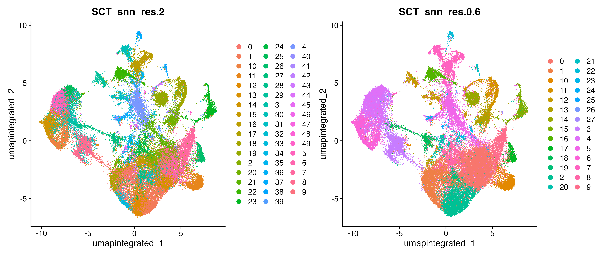
We have far fewer groups with 0.6 than we did with 2. It’s also a heck of a lot less messy. What’s the “best” resolution? There probably isn’t one.
Let’s try a variety of resolutions:
sobj <- FindClusters(sobj, resolution = seq(0.1, 1.4, by=0.2))We can make a plot (credit for this idea) using clustree (install.packages("clustree")).
clustree(sobj@meta.data[,grep("SCT_snn_res", colnames(sobj@meta.data))], prefix = "SCT_snn_res.")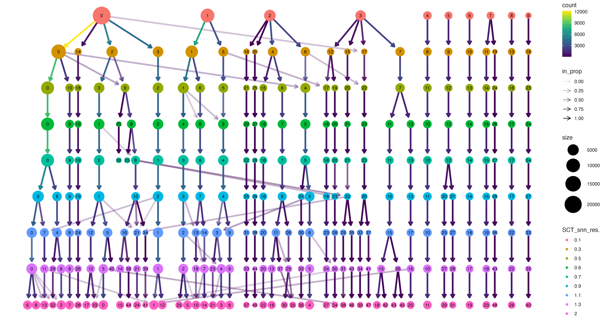
So again, what’s the best resolution? Cells may not always fall into perfectly discrete groups, and discrete-ish variation may also be hierarchical such that different resolutions really are revealing biological variation at different levels. Here we’ll go with 0.6 moving forward. The clusters look relatively clean in the UMAP (vs 2.0). In the above diagram these clusters are relatively stable from 0.5-0.9. When we get higher we start to see lots of clusters that are not subdivisions, but mixtures of clusters at higher levels. That seems like it might be an indicator that more continuous variation is being partitioned messily.
If we had strong prior information, we could make sure that expected cell types were separating cleanly (we will do this to some extent in the next step with annotation).
Finally, before moving on, we’ll set the default grouping:
sobj <- SetIdent(sobj, value = sobj$SCT_snn_res.0.6)12.3 Cell annotation
The general idea behind cell type annotation is that cell types have identifying expression patterns. These patterns may be quite limited, in the form of a handful of “marker genes” that are thought to distinguish a given cell type, or they may be inferred from more comprehensive data. This could take the form of comparing current clusters against an existing clustered, annotated scRNA-seq dataset, or using a classifier trained on one ore more existing datasets.
In this paper, there is no existing annotated M. pharaonis dataset, so the authors compile a list of marker genes from other studies of gene expression in insect brains (surely mostly Drosophila ) and use those.
Let’s create a list object:
litgenes <- list(
Neurons=c("Syt1", "nSyb"), # "Glaz" in original paper, but not in data
Glia=c("fne", "bdl", "repo"),
kenyoncells=c("Pka-C1", "trio"), #PCLepsilon in original, but missing from data
opticlobe=c("Octbeta1R", "Drgx", "ort", "Ih", "qvr", "bt", "ct", "VGlut"),
PR=c("ninaB", "ninaC", "trp"),
OPN=c("Sulf1", "acj6"),
MN=c("Vmat", "DAT", "Ddc", "ple"),
AST=c("Gs1", "Gat", "moody"),
EG=c("Tsf1", "CG8745", "e", "Idgf4"),
SG=c("Mdr49", "vkg", "Tret1-1", "Indy"),
CG=c("wrapper", "zyd")
)We have “neurons” and “glia”, but also subtypes within this group. We can visualize the expression of genes on the UMAP plot:
FeaturePlot(sobj, litgenes$kenyoncells, ncol=3, reduction="umap.integrated")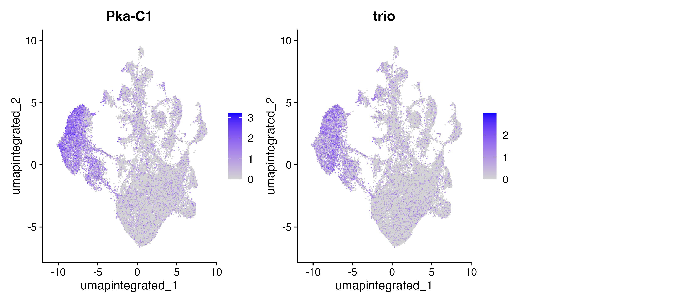
We can see high expression concentrated for these two genes that are markers for Kenyon cells in the large cluster on the left, suggesting those cells are likely Kenyon cells.
If we don’t have a priori markers we’re looking for, we can also extract markers conserved across our samples for each cluster like this:
gids <- levels(Idents(sobj))
sobj <- PrepSCTFindMarkers(sobj)
markers <- lapply(gids, FUN=function(x){FindConservedMarkers(sobj, ident.1 = x, grouping.var = "Replicate", verbose = FALSE, assay="SCT")})First we get a list of group IDs (just numbers at this point). Then we get our SCTransform normalized counts ready, then for each group ID we run FindConservedMarkers().
This is going to identify sets of genes that are significantly differentially expressed in each cell cluster compared to the others. Since “compared to the others” means this is essentially an average, identified genes won’t necessarily be unique to the group, but may be shared by a small number of other groups. If you specifically want to identify markers that separate pairs of clusters you can supply two cluster IDs.
Let’s pull out a table with the top 5 markers for each cell type. Each table will have the log2 fold change for each potential marker gene for each replicate, so we’ll average them.
topmarkers <- c()
for(i in 1:28){
FCs <- grep("FC", colnames(markers[[i]]))
tmp <- data.frame(markers[[i]],aveLog2FC=rowMeans(markers[[i]][,FCs])) %>%
filter(aveLog2FC > 1) %>%
mutate(group=gids[i]) %>%
select(aveLog2FC,group) %>%
head(n=5)
topmarkers <- rbind(topmarkers,tmp)
}Note that many of our literature-based marker genes don’t show up here:
unlist(litgenes) %in% rownames(topmarkers) %>% table()FALSE TRUE
23 14 In part that’s because some of them don’t seem to show as strong of a pattern as we might like (do the FeaturePlot for the generic “Neuron” markers), but for some (like Pka-C1 in Kenyon cells) it’s probably because there just happen to be stronger markers, or ones that are specific to a subcluster:
FeaturePlot(sobj, features = c("CG5235", "Pharaoh-ant-17423"), reduction="umap.integrated", label=TRUE)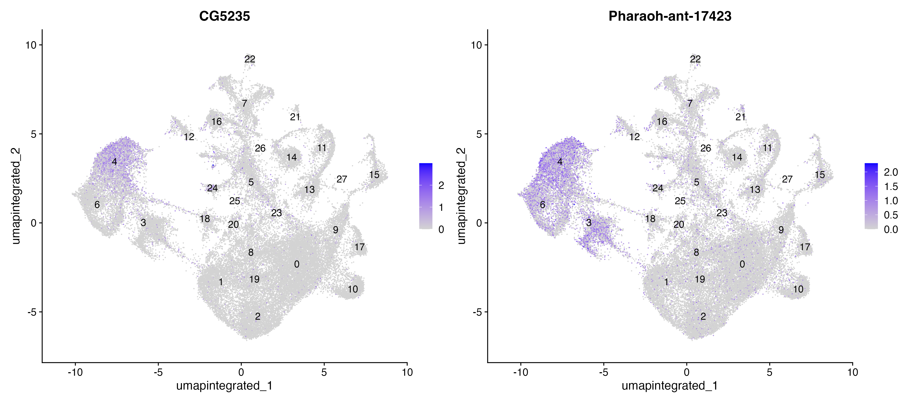
Now, there is a functionAddModuleScore() that we could use to score cells by their expression at a given set of genes. We could then average those scores across cells to get an idea of which clusters should be given which identities. That might help for our literature-based genes.
Here we’re just going to make a dot plot, and manually match up the cells with their literature-based markers as best we can. The dot plot visually displays the average expression by cell group for a given set of genes. There is an analogous figure in the paper. It’s a bit cleaner though:
DotPlot(sobj, features = allmarkers ,cols=c("azure2", "firebrick1"), dot.scale = 8) + RotatedAxis()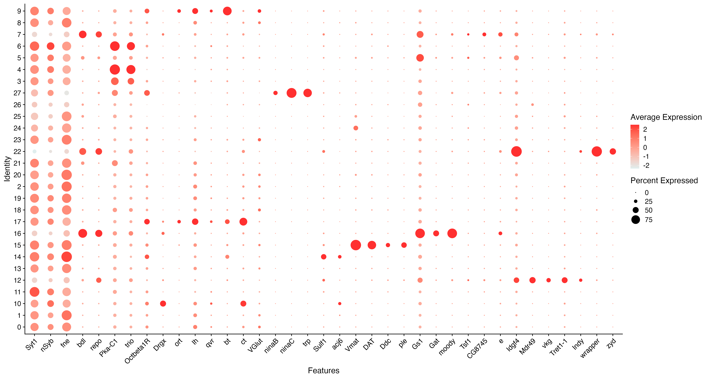
The first five genes are meant to generally distinguish neurons and glia. We can see that they largely do, with 7,12,16 and 22 having generally higher expression for the two glial genes and the rest having generally higher expression for the two neuronal genes. They correspond to astrocytes (AST), ensheathing glia (EG), cortex glia (CG), and surface glia (SG). Those designations are backed up by their expression for cell-type-specific markers as well.There may be a much better way to do this, but we can go through and manually make assignments to the cell types in the paper based on the literature genes like this:
celltypes <- c(
"0" = "Neuron1",
"1" = "Neuron2",
"2" = "Neuron3",
"3" = "Neuron-KC1",
"4" = "Neuron-KC2",
"5" = "Glia1",
"6" = "Neuron-KC3",
"7" = "Glia-EG",
"8" = "Neuron4",
"9" = "Neuron-OL1",
"10" = "Neuron-OL2",
"11" = "Neuron5",
"12" = "Glia-SG",
"13" = "Neuron6",
"14" = "Neuron-OPN",
"15" = "Neuron-MN",
"16" = "Glia-AST1",
"17" = "Neuron-OL3",
"18" = "Neuron7",
"19" = "Neuron8",
"20" = "Neuron9",
"21" = "Neuron10",
"22" = "Glia-CG",
"23" = "Neuron11",
"24" = "Neuron12",
"25" = "Neuron13",
"26" = "Neuron14",
"27" = "Neuron-PR")We have lots of clusters of generic neurons that aren’t explored in the paper. With this celltypes vector in hand, we can translate our clusters into cell type labels:
ctypevec <- celltypes[as.character(sobj$SCT_snn_res.0.6)]
names(ctypevec) <- names(sobj$SCT_snn_res.0.6)And add it to the seurat object:
sobj$cell_type <- data.frame(ctypevec)
# set the levels so they order nicely
sobj$cell_type <- factor(sobj$cell_type, levels=sort(unique(sobj$cell_type)))And set the cell type as the group identities.
Idents(sobj) <- sobj$cell_typeAnd remake the dot plot!
DotPlot(sobj, features = allmarkers ,cols=c("azure2", "Red"), dot.scale = 8) + RotatedAxis()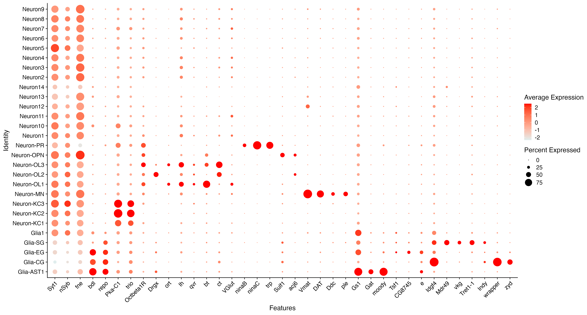
Still a bit messy, but much nicer. If we wanted to look at the markers that we find from the data itself we can do that as well. Let’s first add the cell types to ourtopmarkers object and then order it. Then make the plot. It’s super messy because we have included to many genes! It could use a little refinement.
topmarkers$celltypes <- as.factor(celltypes[topmarkers$group])
topmarkers <- arrange(topmarkers, celltypes)
DotPlot(sobj, features = rownames(topmarkers) ,cols=c("azure2", "Red"), dot.scale = 8) + RotatedAxis()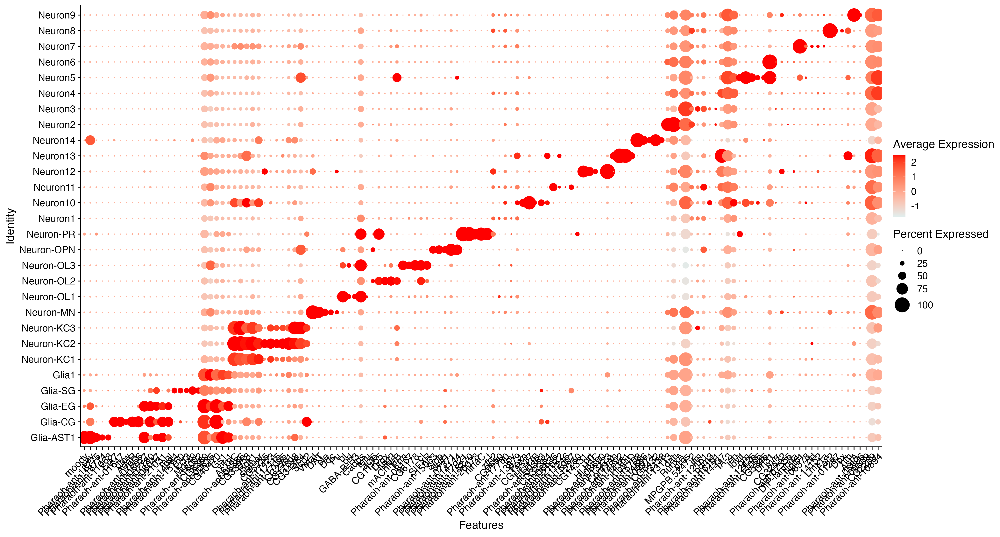
And we can also remake our UMAP plot (or the FeaturePlot()) and add our labels:
DimPlot(sobj, reduction = "umap.integrated", group.by = c("cell_type"), label=TRUE)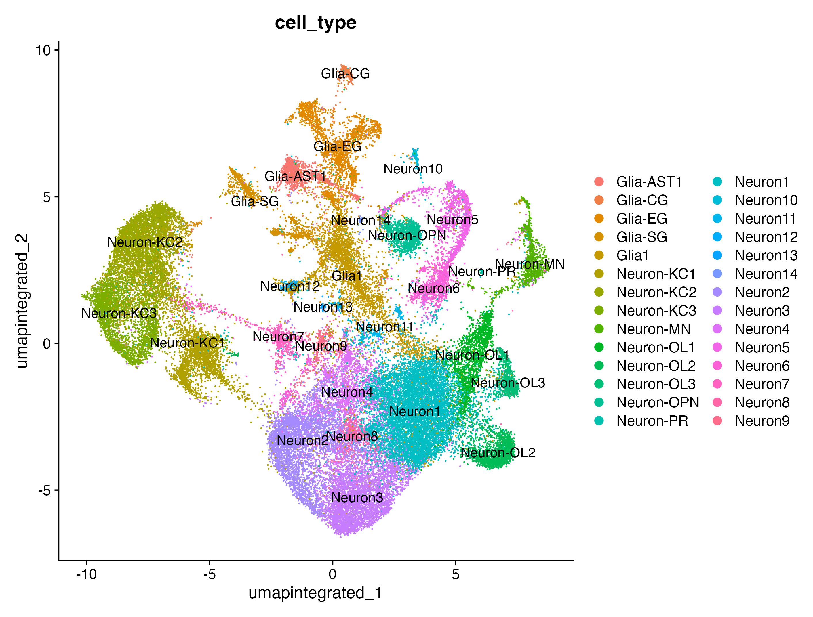
And finally we can remake our table of cell numbers per type for each replicate:table(sobj$cell_type,sobj$Replicate) Male-1 Male-4 Worker-2 Worker-3
Glia-AST1 248 403 158 180
Glia-CG 53 75 44 71
Glia-EG 507 847 332 457
Glia-SG 229 292 258 333
Glia1 413 870 974 1165
Neuron-KC1 926 1118 657 1120
Neuron-KC2 686 460 1181 1305
Neuron-KC3 453 305 1044 1090
Neuron-MN 237 196 275 292
Neuron-OL1 705 755 133 187
Neuron-OL2 698 744 97 127
Neuron-OL3 392 335 24 19
Neuron-OPN 150 175 378 364
Neuron-PR 14 15 1 0
Neuron1 2587 2956 1263 1724
Neuron10 52 49 95 97
Neuron11 39 45 69 83
Neuron12 37 15 68 67
Neuron13 9 6 8 17
Neuron14 5 12 7 11
Neuron2 1192 1043 936 1088
Neuron3 1143 1019 876 1060
Neuron4 515 527 444 475
Neuron5 178 187 487 475
Neuron6 235 286 273 302
Neuron7 201 157 148 166
Neuron8 92 162 157 199
Neuron9 86 62 98 99Just eyeballing it, it seems like there might be real differences in Kenyon cell (KC) and optic lobe (OL) neuron numbers between the two phenotypes. The full dataset with more replicates and a statistical method like scCODA would be a better place to start with formally testing that, as the paper does (it does indeed find that optic lobe neurons are more abundant in males):
By contrast, male brains had the highest abundances not only in all OL clusters, but also for two of the three astrocyte clusters, while they had the lowest abundances in OPNs and almost all KC-related clusters. These results clearly indicate that Monomorium males rely heavily on visually guided behaviour
12.3.1 Clustering and annotation conclusion
If you’re looking at our workflow up until this point and saying, “Gee, we seem to have made an awful lot of somewhat arbitrary decisions. Many of those decisions seem like they might have had non-trivial impacts on our results so far.” then you would be 100% correct! There are more sophisticated options for some of these steps, particularly for cell type annotation, but they require reference data may not be available for all organisms, tissues or life stages. It’s appropriate to approach analyses like this with a lot of caution, and to ask if big important results might be contingent on subjective choices during the analysis.
12.4 Differential expression
The last step we’ll cover with single-cell data is testing for differential expression between cells of the same cell type across experimental groups. Above we showed how you can use FindMarkers() to effectively do differential expression between cell types within samples (we did a single cell type compared to all others, but you can do pairwise comparisons as well).
Here we’re going to use a popular approach referred to as pseudobulk differential expression analysis. In this approach we aggregate the counts for each cell type for each sample into a single expression profile. We then use the machinery of classical differential expression analysis (in this case the DESeq2 model we applied last semester when doing bulk RNA-seq).
This gets around one of the fundamental weaknesses of bulk differential expression analysis: changes in cell type composition across experimental groups are confounded with changes in gene expression. That is to say, bulk DE analysis may still detect “differential expression” if cell type composition changes across treatments even if cell type expression profiles don’t.
The first step here is to aggregate the counts across cells within types and samples. Seurat has a function for this. Note that we are using the RNA assay, that is, our raw count data, not a normalized or transformed version of it. You’ll remember from last semester count-based DE models need the raw data to be valid.
aggregate_sobj <- AggregateExpression(sobj, group.by = c("cell_type", "Replicate"), assays="RNA", return.seurat = TRUE)
# list new "cell" names
Cells(aggregate_sobj) %>% head(., n=8)[1] "Glia-AST1_Male-1" "Glia-AST1_Male-4" "Glia-AST1_Worker-2"
[4] "Glia-AST1_Worker-3" "Glia-CG_Male-1" "Glia-CG_Male-4"
[7] "Glia-CG_Worker-2" "Glia-CG_Worker-3" The Cells() command just lists the names of the new “cells” in the object we’ve created. So you can see for the first two cell types we’ve output above we now have a vector of aggregated counts for each of four samples.
We could export this data to a matrix and bring it into DESeq2 manually. Seurat provides this functionality as well, so we’ll just use its functions. We would want to export the data and run DESeq2 manually if we had a more complex experiment (if we had interactions to test, for example), but we are just doing a pairwise comparison here.
First lets add categories to our expression profiles (by just stripping the sample number off the current titles) and set those as the profile identities.
# create new categories
Idents(aggregate_sobj) <- Cells(aggregate_sobj) %>% str_remove("-[0-9]")Now we can run a differential expression analysis. We’re going to look at one of the Kenyon cell groups that showed a likely abundance difference between males and workers (we did not formally test for it).
# test for differential expression between workers and males for Neuron-KC2 group.
KC2DE <- FindMarkers(object = aggregate_sobj, ident.1 = "Neuron-KC2_Male", ident.2 = "Neuron-KC2_Worker", test.use = "DESeq2")converting counts to integer mode
gene-wise dispersion estimates
mean-dispersion relationship
final dispersion estimatesThis will output a simple data frame (which does not have all the info DESeq2 usually provides):
head(KC2DE) p_val avg_log2FC pct.1 pct.2 p_val_adj
AstA 1.868479e-44 -5.701030 1 1 2.927159e-40
Pharaoh-ant-05017 3.806350e-28 1.159425 1 1 5.963027e-24
nord 4.497848e-27 3.176323 1 1 7.046329e-23
Pharaoh-ant-03468 3.749170e-25 1.171522 1 1 5.873449e-21
zld 4.363376e-22 -4.335117 1 1 6.835665e-18
Drep1 3.773811e-20 -3.516470 1 1 5.912052e-16There are lots of DE genes, perhaps some of them are junk, but the top ones look cool!
sum( KC2DE$p_val_adj < 0.05 )[1] 221Let’s make some feature plots with a few of these genes:
FeaturePlot(sobj, features = "AstA", reduction="umap.integrated", label=TRUE, split.by="Phenotype")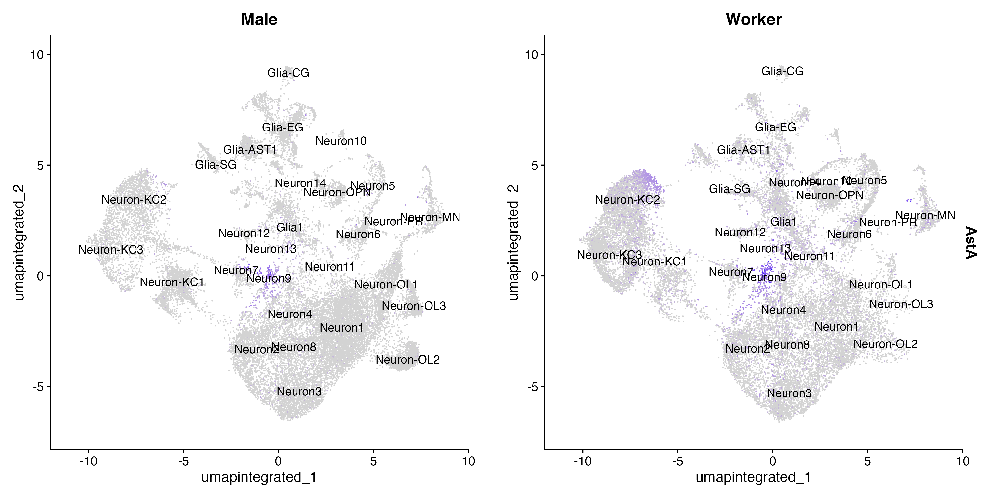
AstA is a neuropeptide that modulates growth, sexual development and feeding behavior. If we look closely, it seems like the KC2 group cells expressing it in workers are not very common in males, so perhaps this is a case again of differential cell abundance (of a cell type we have lumped with another) rather than differential gene expression? This gene also seems to be expressed in the Neuron9 group, but in both phenotypes.
FeaturePlot(sobj, features = "Pharaoh-ant-05017", reduction="umap.integrated", label=TRUE, split.by="Phenotype")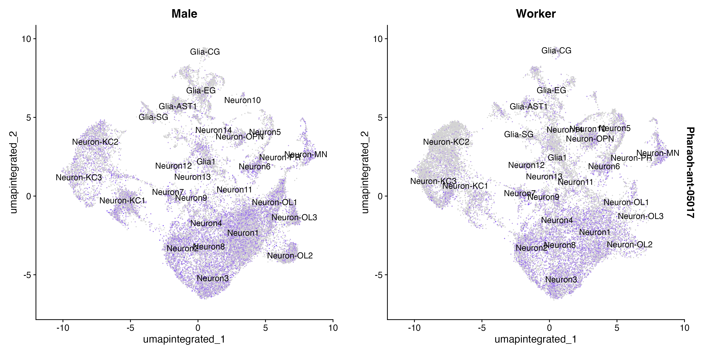
In this case, we have an unannotated gene that seems to be widely expressed in neurons in general, but downregulated in the KC2 group in workers.
FeaturePlot(sobj, features = "nord", reduction="umap.integrated", label=TRUE, split.by="Phenotype")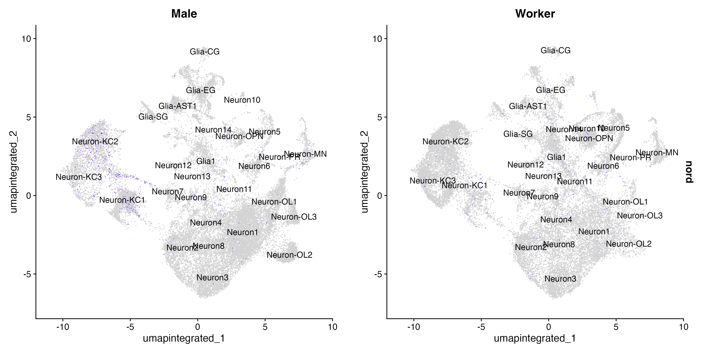
Lastly we have the gene nord, which appears to be expressed primarily in kenyon cell groups KC1 and KC2 in males and hardly anywhere else. A brief search on this gene suggests its known in Drosophila as a regulator (inhibitor) of bone morphogenetic protein signaling. BMP is involved in lots of developmental processes, including brain development, but a quick search didn’t reveal much more detail about processes it might be involved with here.
12.5 Conclusion
To wrap up, in this module we’ve seen how single-cell RNA-seq data is structured. How we can use Seurat to process it, visualize it, and cluster cells into putative cell types. We’ve manually annotated cell types using a defined set of marker genes and done pseudo-bulk differential expression. These steps are foundational to lots of scRNA-seq studies, but there are more applications we didn’t discuss at all. Some examples:
- Trajectory analysis attempts to infer where cells are on a developmental “trajectory”.
- RNA velocity analysis tries to predict the future gene expression state of cells by comparing abundance of spliced and unspliced RNA, assuming that unspliced transcripts will shortly comprise the expressed transcripts.
- Cell-cell communication analysis takes in expression data and a repository of receptors and ligands and single-cell expression data and tries to infer which cell types have complementary expression patterns for these genes potentially indicating they are signaling to each other.
- Spatial transcriptomics integrates single-cell expression data with information on the physical location of cells in tissues.
- “Multi”-omics incorporates data types beyond gene expression, such as proteomic, metabolomic, and epigenomic information.